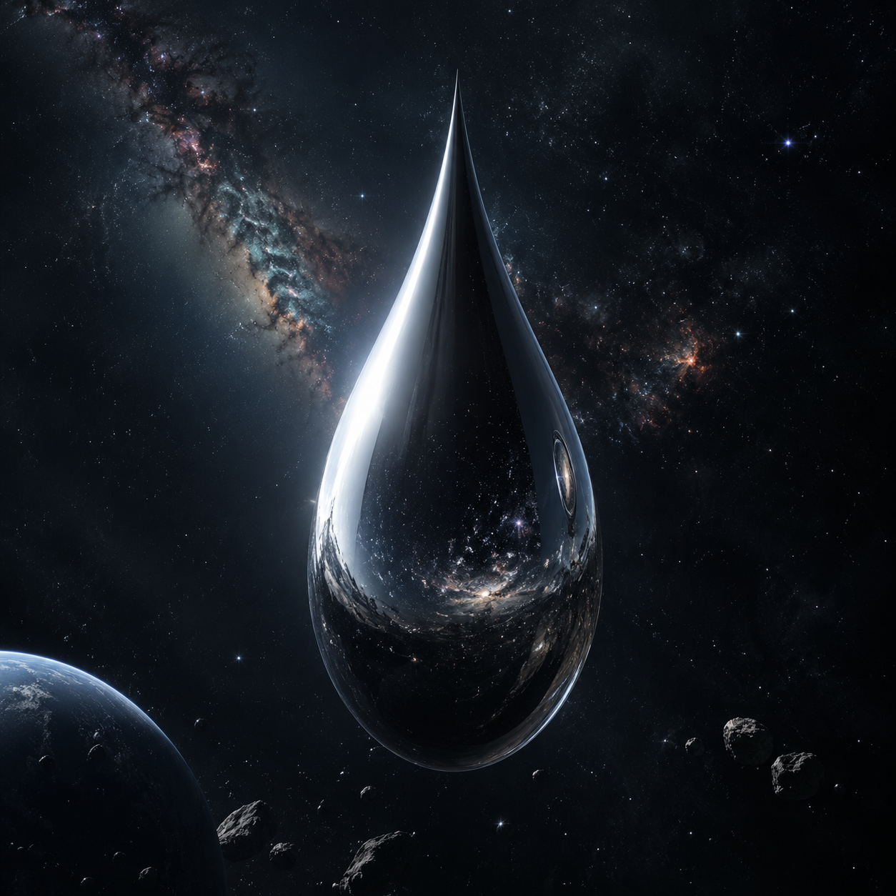
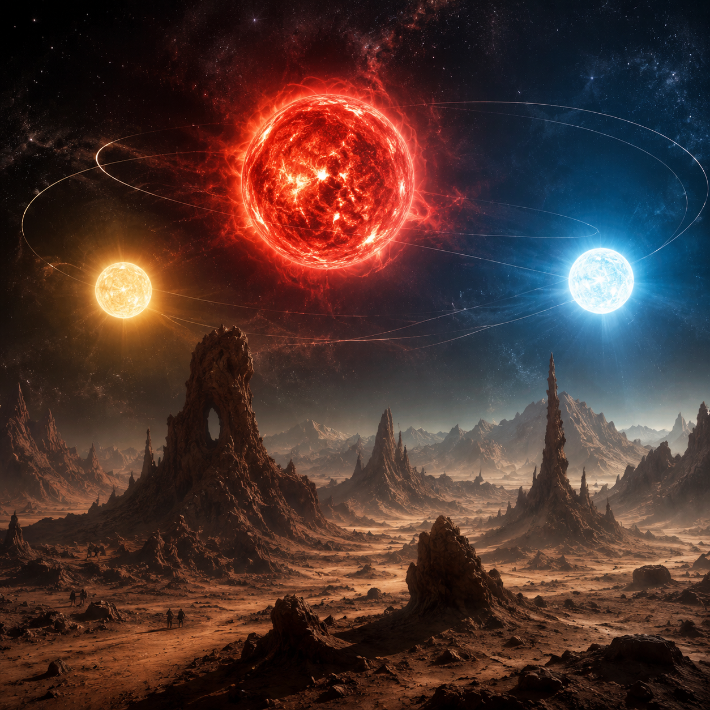
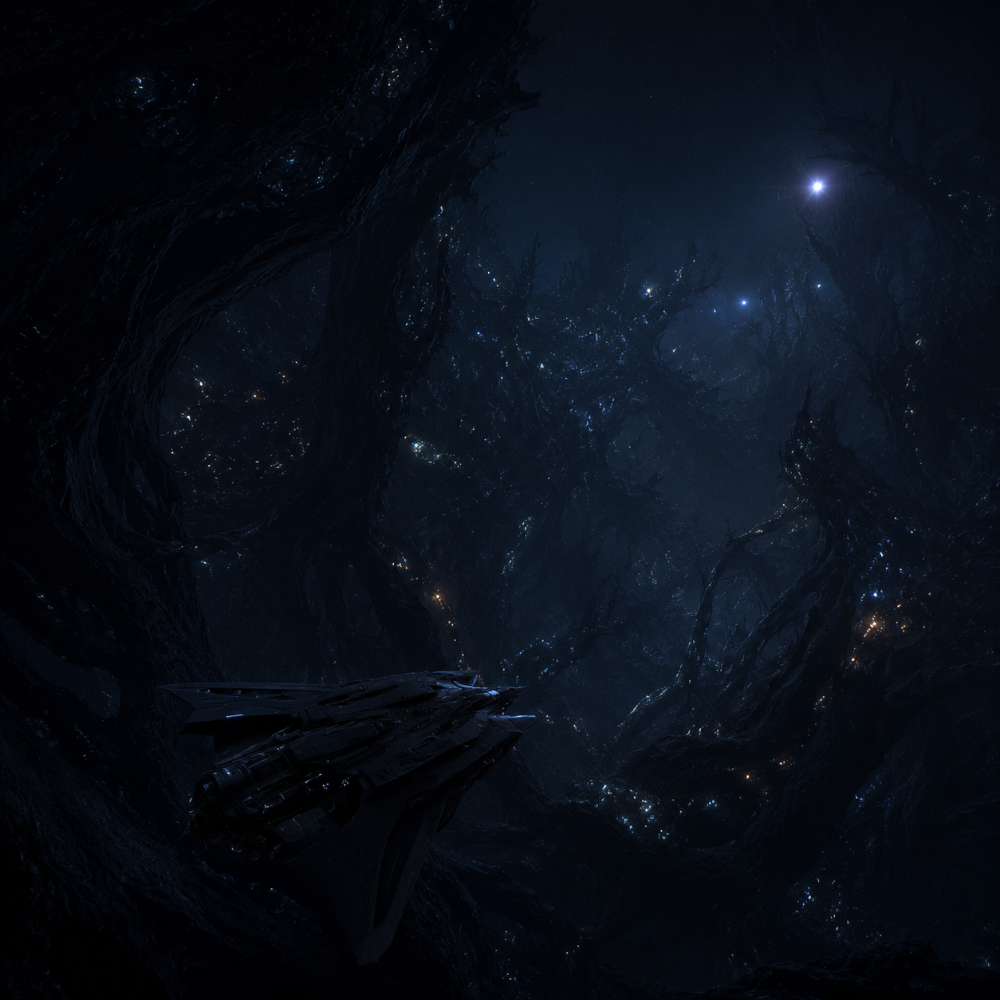
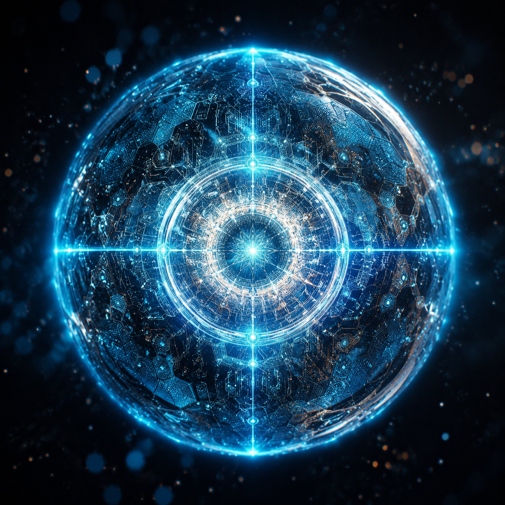

"宇宙很大，生活更大"
它呈完美的水滴形状，表面绝对光滑，反射着一切光线。这是一种由强相互作用力材料构成的探测器——它的表面强度，超过人类所有已知物质。
它看似平静地悬浮在太空中，却在瞬间摧毁了人类的太空舰队。一千两百艘战舰，在它面前如同纸片。
毁灭你，与你何干？


在三颗恒星的引力拉扯中，一颗行星的轨道永远无法预测。乱纪元与恒纪元交替出现，文明在烈焰与严寒中一次次毁灭又重生。
三体人脱水、浸泡，用身体储存文明。二百次文明毁灭，只为寻找一个稳定的家园——而那个家园，叫做地球。
不要回答！不要回答！不要回答！
宇宙是一座黑暗森林，每个文明都是带枪的猎人。他小心翼翼地在林间穿行，连呼吸都必须谨慎——因为林中还有无数个他。
猜疑链与技术爆炸，让任何暴露坐标的文明都难逃毁灭的命运。沉默，是宇宙中唯一的生存法则。
弱小和无知不是生存的障碍，傲慢才是。


将一个质子二维展开，在它表面蚀刻电路，再折叠回微观尺度——这就是智子。它是三体文明的眼睛，时刻监视着地球。
它干扰粒子加速器，锁死了人类基础科学的发展。它以光速飞行，无处不在。在智子的注视下，人类的一切，都已是透明的。
你的无畏来源于无知。